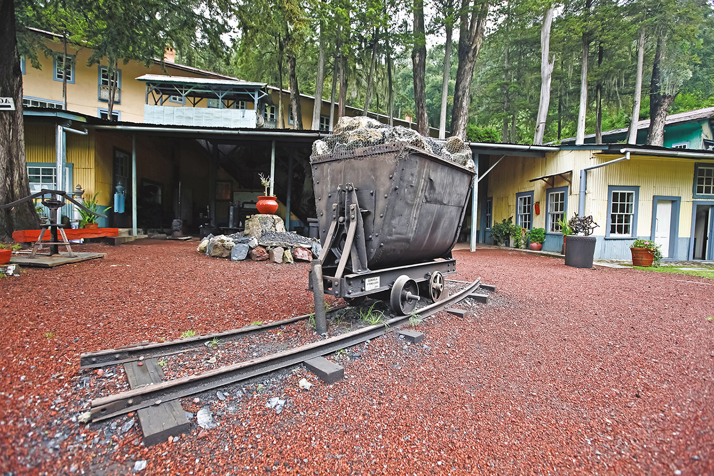

Síntesis basada en el INAH y en la narrativa regional: del Real de Minas a la reconversión artesanal.
La región fue frontera cultural entre pueblos mesoamericanos. Hacia 1460 se documenta presencia purépecha y posteriormente influencia mexica. Con la colonización, en 1560 el descubrimiento de vetas de oro y plata impulsó el Real de Minas de Tlalpujahua, motor económico durante siglos.
En el siglo XIX, el pueblo es cuna de los hermanos López Rayón; en 1859 recibe el título de Mineral de Rayón. La inundación de 1937 afectó la mina Dos Estrellas y el casco urbano; la torre del Carmen quedó como testigo arquitectónico de esa tragedia.
La Zona de Monumentos Históricos (~0,35 km², 42 manzanas) agrupa inmuebles religiosos, civiles y públicos —exconvento franciscano, santuario del Carmen, teatro, presidencia— en un trazado minero adaptado al desnivel.

Decretado en 1952, el área protegida es también escenario histórico del movimiento insurgente. Senderismo, clima frío y bosque de oyamel; respeta reglas del parque y no dejes basura.
Tlalpujahua ingresó al programa federal de Pueblos Mágicos en 2005, reconociendo su valor cultural, artesanal y paisajístico.